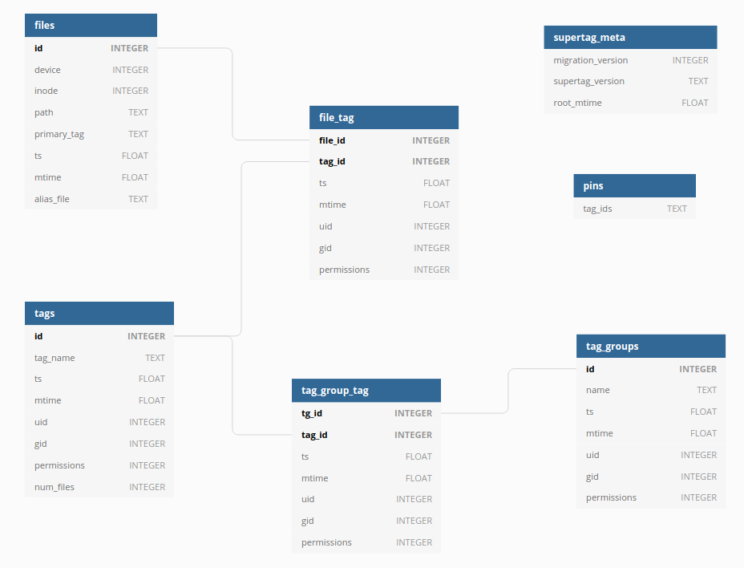

Database Schema¶
The database is pretty simple. There are no real surprises, just some small tables with simple relationships.
{kind=link}
files¶
The files table contains files names that exist inside an entire collection. A file record is inserted
when a new file is linked into Supertag.
- device
The device id where the target file resides. Together with the inode column, this can be used to reliably point to any file.
- inode
The inode number of the target file. Together with the device column, this can be used to reliably point to any file.
- path
The full path to the target file. This is used when resolving the Supertag symlink to the file. Due to this being a fragile field, if the target file moves, this breaks and needs healing, which is not yet implemented on Linux.
- primary_tag
The file’s name as it appears in Supertag. Typically this will be populated with the name of the original file, when it was imported or linked.
- ts
The timestamp of when the record was created.
- mtime
The modification time of the file record.
- alias_file
This column is only used on MacOS. See MacOS Aliases for an explanation.
tags¶
The tags table represents all of the tags in the collection. Every tag will have a
corresponding folder at the top level of the manifolder. A tag record is inserted when a tag is
created.
- tag_name
The tag name. Surprise!
- ts
The timestamp of when the record was created.
- mtime
The modification time of the tag record.
- uid
The user id that the tag directory should have.
- gid
The group id that the tag directory should have.
- permissions
The permissions of the tag’s directory.
- num_files
A pre-computed cache of the number of files that have this tag.
file_tag¶
The many-to-many intermediate table for files and tags. A file can be tagged with many tags, and a tag can apply to many files. A file_tag record is inserted when a file is linked to a tag.
- ts
The timestamp of when the record was created.
- mtime
The modification time of the file-tag record.
- uid
The user id that the file should have, in the tag directory it is linked to.
- gid
The group id that the file should have, in the tag directory it is linked to.
- permissions
The permissions of the tag’s directory, derived from the umask of the user who created it.
tag_groups¶
The tag_groups table stores tag groups.
- name
The tag group name. Surprise!
- ts
The timestamp of when the record was created.
- mtime
The modification time of the tag group record.
- uid
The user id that the tag group directory should have.
- gid
The group id that the tag group directory should have.
- permissions
The permissions of the tag group’s directory.
tag_group_tag¶
The many-to-many intermediate table for tags and tag_groups. A tag can belong to many tag groups, and a tag group can contain many tags. A record for this table is inserted when the user creates a tag group.
- ts
The timestamp of when the record was created.
- mtime
The modification time of the tag-group-tag record.
- uid
The user id that the tag-group-tag directory should have.
- gid
The group id that the tag-group-tag directory should have.
- permissions
The permissions of the tag-group-tag’s directory.
supertag_meta¶
This metadata table tracks some simple data related to the Supertag collection itself.
- migration_version
A simple integer version of which db migrations have been applied.
- supertag_version
The semantic version of the app.
- root_mtime
The modification time of the root collection directory itself.
pins¶
Pins are essentially tag intersections that have been “pinned” to exist. They originate from the need
to create tag folders before tagging files into them. For example, pins allow you to create /tag1/tag2/
and then link a file into that subdirectory. You normally wouldn’t be able to do this, as without pins,
tag2 would only appear under tag1 if they contain intersecting files.
- tag_ids
Each row is a path containing the tag ids to pin.